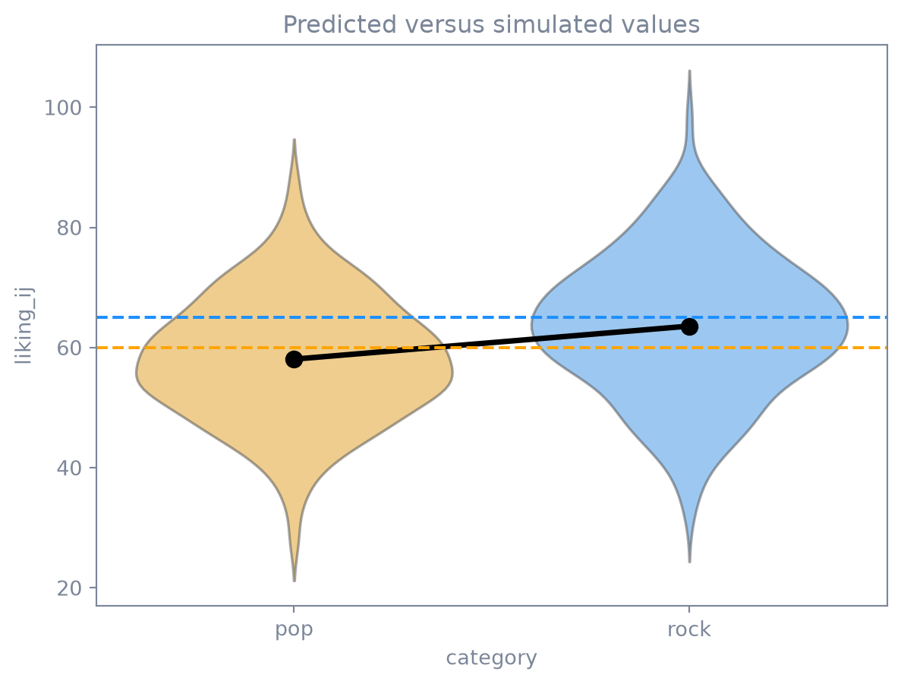
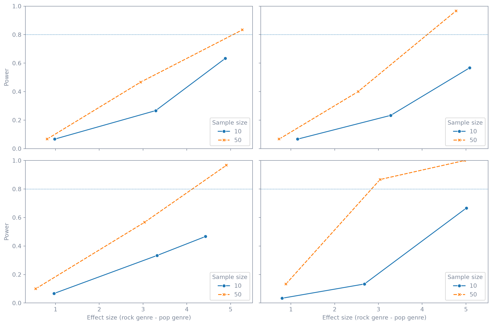

import statsmodels.formula.api as smf
import numpy as np
import pandas as pd
import seaborn as sns
import matplotlib.pyplot as plt
import dask
import time
from dask.distributed import Client
from itertools import productPython
This chapter follows the same structure as the R chapter, and much of the prose is deliberately repeated so that it can be read on its own. Where the two languages differ, a note says so.
Setup
NoteTwo differences from the R chapter
- R uses
p_load()to install any missing libraries and load them in one step. In Python the environment is configured separately — here byuv syncfrom the materials folder — so the imports below assume the packages are already installed. - The R chapter sets up parallelism once in its setup section; this chapter uses
daskat the point where the simulations are run.
We will need to use several Python packages to optimize our workflow and fit mixed effects models.
We will also set the pseudo-random number generator seed to 2138 to make the stochastic components of our simulations reproducible.
np.random.seed(2138)Data simulation step by step
To give an overview of the power simulation task, we will simulate data from a design with crossed random factors of subjects and songs (see Power of What? for design details), fit a model to the simulated data, recover from the model output the parameter values we put in, calculate power, and finally automate the whole process so that we can calculate power for different effect sizes. Much of the general workflow here is borrowed from DeBruine & Barr (2021) Understanding Mixed-Effects Models through Simulation. We’ll start by writing code that simulates datasets under the alternative hypothesis.
NoteTwo differences from the R chapter
- The mixed model is fitted with
statsmodels, which does not report the correlation between a subject’s random intercept and random slope, sorhocannot be recovered from the fit as it can in R. - There is no equivalent of
broom.mixed::tidy(), so the results are pulled out of the summary table by hand rather than arriving as a tidy data frame.
Establish the simulation parameters
Before we start, let’s set some global parameters for our power simulations. Since simulations can take a long time to run, we’ll use 30 replications here as an example, but we recommend increasing this number to at least 1000 replications for a more accurate final power calculation.
# number of simulation replicates for power calculation
reps = 30
# specified alpha for power calculation
alpha = 0.05Establish the data-generating parameters
The first thing to do is to set up the parameters that govern the process we assume gave rise to the data - the data-generating process, or DGP. We previously decided upon the data-generating parameters (see Power of What?), so we just need to code them here.
# set all data-generating parameters
beta_0 = 60 # intercept; i.e., the grand mean
beta_1 = 5 # slope; i.e, effect of category
omega_0 = 3 # by-song random intercept sd
tau_0 = 7 # by-subject random intercept sd
tau_1 = 4 # by-subject random slope sd
rho = 0.2 # correlation between intercept and slope
sigma = 8 # residual (error) sdSimulate the sampling process
Next, we will simulate the sampling process for the data. First, let’s define parameters related to the number of observations.
# set number of subjects and songs
n_subj = 25 # number of subjects
n_pop = 15 # number of songs in pop category
n_rock = 15 # number of songs in rock categorySimulate the sampling of songs
We need to create a table listing each song \(i\), which category it is in (rock or pop), and its random effect \(O_{0i}\). The latter is sampled from a univariate normal distribution using the function np.random.normal().
# simulate a sample of songs
songs = pd.DataFrame({
'song_id': range(1, n_pop + n_rock + 1),
'category': ['pop']*n_pop + ['rock']*n_rock,
'genre_i': [0]*n_pop + [1]*n_rock,
'O_0i': np.random.normal(0, omega_0, n_pop + n_rock)
})
print(songs.head(10)) song_id category genre_i O_0i
0 1 pop 0 -1.803722
1 2 pop 0 -4.618354
2 3 pop 0 -4.847097
3 4 pop 0 -1.097951
4 5 pop 0 -1.394909
5 6 pop 0 2.424235
6 7 pop 0 -3.956914
7 8 pop 0 0.873891
8 9 pop 0 3.318065
9 10 pop 0 5.513671Simulate the sampling of subjects
Now we simulate the sampling of participants, which results in table listing each individual and their two correlated random effects (a random intercept and random slope). To do this, we must sample \(T_{0j} ,T_{1j}\) pairs - one for each subject - from a bivariate normal distribution.
We will use the function np.random.multivariate_normal(), which generates a table of n simulated values from a multivariate normal distribution by specifying the means and covariance matrix(cov).
# simulate a sample of subjects
# sample from a multivariate normal distribution
mean = [0, 0] # means for random effects are always 0
cov = [[tau_0**2, rho*tau_0*tau_1], [rho*tau_0*tau_1, tau_1**2]] # set covariance matrix
random_effects = np.random.multivariate_normal(mean, cov, n_subj)
subjects = pd.DataFrame(random_effects, columns=['T_0j', 'T_1j'])
subjects['subj_id'] = range(1, n_subj + 1) # add subject IDs
print(subjects.head(10)) T_0j T_1j subj_id
0 -0.547564 -2.796419 1
1 -10.695092 -3.700622 2
2 3.387493 -7.940628 3
3 4.344241 0.531463 4
4 6.461586 5.260280 5
5 -12.373764 -1.387928 6
6 0.352194 -3.990547 7
7 -6.962734 2.358670 8
8 -2.636463 -0.370637 9
9 0.619930 -4.416671 10Check the simulated values
Let’s do a quick sanity check by comparing our simulated values to the parameters we used as inputs. Because the sampling process is stochastic, we shouldn’t expect that these will exactly match for any given run of the simulation.
check_values = pd.DataFrame({
'parameter': ['omega_0', 'tau_0', 'tau_1', 'rho'],
'value': [omega_0, tau_0, tau_1, rho],
'simulated': [songs['O_0i'].std(), subjects['T_0j'].std(), subjects['T_1j'].std(), subjects['T_0j'].corr(subjects['T_1j'])]
})
print(check_values) parameter value simulated
0 omega_0 3.0 3.372345
1 tau_0 7.0 5.648262
2 tau_1 4.0 4.439518
3 rho 0.2 0.063860Simulate trials
Since all subjects rate all songs (i.e., the design is fully crossed) we can set up a table of trials by including every possible combination of the rows in the subjects and songs tables. Each trial has random error associated with it, reflecting fluctuations in trial-by-trial ratings due to unknown factors. We simulate this by sampling values from a univariate normal distribution with a mean of 0 and a standard deviation of sigma.
# cross subject and song IDs; add an error term
trials = subjects.assign(key=1).merge(songs.assign(key=1), on='key').drop(columns='key')
trials['e_ij'] = np.random.normal(0, sigma, len(trials))
print(trials.head(10)) T_0j T_1j subj_id song_id category genre_i O_0i e_ij
0 -0.547564 -2.796419 1 1 pop 0 -1.803722 6.954841
1 -0.547564 -2.796419 1 2 pop 0 -4.618354 -6.588163
2 -0.547564 -2.796419 1 3 pop 0 -4.847097 5.226969
3 -0.547564 -2.796419 1 4 pop 0 -1.097951 -11.285800
4 -0.547564 -2.796419 1 5 pop 0 -1.394909 2.418785
5 -0.547564 -2.796419 1 6 pop 0 2.424235 -7.579483
6 -0.547564 -2.796419 1 7 pop 0 -3.956914 -2.553524
7 -0.547564 -2.796419 1 8 pop 0 0.873891 12.726906
8 -0.547564 -2.796419 1 9 pop 0 3.318065 -6.371494
9 -0.547564 -2.796419 1 10 pop 0 5.513671 13.508966Calculate response values
With this resulting trials table, in combination with the constants \(\beta_0\) and \(\beta_1\), we have the full set of values that we need to compute the response variable liking_ij according the linear model we defined previously (see Power of What?).
dat_sim = trials.copy()
dat_sim['liking_ij'] = beta_0 + dat_sim['T_0j'] + dat_sim['O_0i'] + (beta_1 + dat_sim['T_1j']) * dat_sim['genre_i'] + dat_sim['e_ij']
dat_sim = dat_sim[['subj_id', 'song_id', 'category', 'genre_i', 'liking_ij']]
print(dat_sim.head(10)) subj_id song_id category genre_i liking_ij
0 1 1 pop 0 64.603556
1 1 2 pop 0 48.245919
2 1 3 pop 0 59.832308
3 1 4 pop 0 47.068685
4 1 5 pop 0 60.476312
5 1 6 pop 0 54.297188
6 1 7 pop 0 52.941998
7 1 8 pop 0 73.053233
8 1 9 pop 0 56.399007
9 1 10 pop 0 78.475074Plot the data
Let’s visualize the distribution of the response variable for each of the two song genres and superimpose the simulated parameter estimates for the means of these two groups.
palette = {'pop': 'orange', 'rock': 'dodgerblue'}
# actual data
sns.violinplot(x='category', y='liking_ij', hue='category', data=dat_sim, palette=palette, inner=None, alpha=0.5, legend=False)
sns.pointplot(x='category', y='liking_ij', data=dat_sim, estimator=np.mean, errorbar=None, color='black')
# predicted means
plt.axhline(y=(beta_0 + 0*beta_1), color='orange', linestyle='dashed')
plt.axhline(y=(beta_0 + 1*beta_1), color='dodgerblue', linestyle='dashed')
plt.title("Predicted versus simulated values")
plt.show()
Analyze the simulated data
Now we can analyze our simulated data in a linear mixed effects model using the function mixedlm from the {statsmodels} package. The formula and vc_formula in mixedlm() map onto how we calculated our liking_ij outcome variable above.
The terms in formula are as follows: liking_ij is the response. 1 is the intercept (\(\beta_0\)), which is the mean of the response for the pop genre of songs (because we used dummy coding for the genre_i term). genre_i is the dummy coded variable identifying whether song \(i\) belongs to the pop or rock genre.
The terms in vc_formula are as follows:
0 + C(song_id) specifies a song-specific random intercept O_0i. 0 + C(subject_id) specifies a subject-specific random intercept T_0j. 0 + C(subject_id):genre_i specifies the subject specific random slope of the genre category T_1j.
However, due to the inability of the function mixedlm(), the module did not indicate the correlation between subject-specific random intercept and the subject specific random slope of the genre category.
# fit a linear mixed-effects model to data
form = 'liking_ij ~ 1 + genre_i'
dat_sim['groups'] = 1
vcf = {'song_id':'0 + C(song_id)', 'subj_id':'0 + C(subj_id)', 'genre_i': '0 + C(subj_id):genre_i'}Now we can estimate the model.
model = smf.mixedlm(form, groups=dat_sim['groups'], vc_formula=vcf, re_formula='0', data=dat_sim)
mod_sim = model.fit()
print(mod_sim.summary()) Mixed Linear Model Regression Results
========================================================
Model: MixedLM Dependent Variable: liking_ij
No. Observations: 750 Method: REML
No. Groups: 1 Scale: 66.4110
Min. group size: 750 Log-Likelihood: -2708.1155
Max. group size: 750 Converged: Yes
Mean group size: 750.0
--------------------------------------------------------
Coef. Std.Err. z P>|z| [0.025 0.975]
--------------------------------------------------------
Intercept 58.078 1.494 38.873 0.000 55.150 61.007
genre_i 5.505 1.631 3.376 0.001 2.309 8.701
genre_i Var 22.355 1.106
song_id Var 10.578 0.443
subj_id Var 33.748 1.353
========================================================
formatted_sim_result = pd.DataFrame({
'term': ['Intercept', 'genre_i', '', '', '', '', ''],
'parameter': ['beta_0', 'beta_1', 'omega_0', 'tau_0', 'rho', 'tau_1', 'sigma'],
'value': [beta_0, beta_1, omega_0, tau_0, rho, tau_1, sigma],
'simulated': [mod_sim.fe_params.iloc[0], mod_sim.fe_params.iloc[1],
'', '',
'', '',
'']
})
formatted_sim_result| term | parameter | value | simulated | |
|---|---|---|---|---|
| 0 | Intercept | beta_0 | 60.0 | 58.078342 |
| 1 | genre_i | beta_1 | 5.0 | 5.504843 |
| 2 | omega_0 | 3.0 | ||
| 3 | tau_0 | 7.0 | ||
| 4 | rho | 0.2 | ||
| 5 | tau_1 | 4.0 | ||
| 6 | sigma | 8.0 |
Data simulation automated
Now that we’ve tested the data generating code, we can put it into a function so that it’s easy to run it repeatedly.
def sim_data(n_subj=25, n_pop=15, n_rock=15, beta_0=60, beta_1=5, omega_0=3, tau_0=7, tau_1=4, rho=0.2, sigma=8):
songs = pd.DataFrame({
'song_id': np.arange(n_pop + n_rock),
'category': np.repeat(["pop", "rock"], [n_pop, n_rock]),
'genre_i': np.repeat([0, 1], [n_pop, n_rock]),
'O_0i': np.random.normal(0, omega_0, n_pop + n_rock)
})
random_effects = np.random.multivariate_normal([0, 0], [[tau_0**2, rho*tau_0*tau_1], [rho*tau_0*tau_1, tau_1**2]], n_subj)
subjects = pd.DataFrame(random_effects, columns=['T_0j', 'T_1j'])
subjects['subj_id'] = np.arange(1, n_subj + 1)
trials = pd.merge(subjects, songs, how='cross')
trials['e_ij'] = np.random.normal(0, sigma, len(trials))
trials['liking_ij'] = beta_0 + trials['T_0j'] + trials['O_0i'] + (beta_1 + trials['T_1j']) * trials['genre_i'] + trials['e_ij']
return trials[['subj_id', 'song_id', 'category', 'genre_i', 'liking_ij']]Power calculation single run
We can wrap the data generating function and modeling code in a new function single_run() that returns a table of the analysis results for a single simulation run.
def single_run(n_subj=25, n_pop=15, n_rock=15, beta_0=60, beta_1=5, omega_0=3, tau_0=7, tau_1=4, rho=0.2, sigma=8):
dat_sim = sim_data(n_subj, n_pop, n_rock, beta_0, beta_1, omega_0, tau_0, tau_1, rho, sigma)
dat_sim['groups'] = 1
mod_sim = smf.mixedlm('liking_ij ~ 1 + genre_i', groups=dat_sim['groups'],
vc_formula={'song_id':'0 + C(song_id)', 'subj_id':'0 + C(subj_id)', 'genre_i': '0 + C(subj_id):genre_i'},
re_formula='0', data=dat_sim).fit()
df = mod_sim.summary().tables[1]
df['p_value'] = mod_sim.pvalues
return df[['Coef.', 'Std.Err.', 'p_value']]Let’s test that our new single_run() function performs as expected.
# run one model with default parameters
single_run()| Coef. | Std.Err. | p_value | |
|---|---|---|---|
| Intercept | 62.364 | 1.620 | 0.000000 |
| genre_i | 1.794 | 1.454 | 0.217012 |
| genre_i Var | 15.056 | 0.854 | 0.027138 |
| song_id Var | 8.783 | 0.387 | 0.004477 |
| subj_id Var | 46.691 | 1.848 | 0.001541 |
# run one model with new parameters
single_run(n_pop = 10, n_rock = 50, beta_1 = 2)| Coef. | Std.Err. | p_value | |
|---|---|---|---|
| Intercept | 60.065 | 1.635 | 1.824465e-295 |
| genre_i | 2.934 | 1.308 | 2.494009e-02 |
| genre_i Var | 14.922 | 0.811 | 1.634819e-02 |
| song_id Var | 6.946 | 0.230 | 8.011783e-05 |
| subj_id Var | 43.595 | 1.826 | 1.830974e-03 |
Power calculation automated
To get an accurate estimation of power, we need to run the simulation many times. Here we use the package dask to parallelize existing code to speed-up iterative processes.
We use dask.delayed function to decorate single_run() so that it operates lazily, then call the delayed version repeatedly using for statement, and finally call dask.compute function to get the result of simulations.
NoteTwo differences from the R chapter
- R loops with
future_map_dfr(); here a plainforloop builds a list of delayed calls. - R configures parallelism once at the top; here
daskdoes it at the point of use.
client = Client()
@dask.delayed
def delayed_single_run(n_subj=25, n_pop=15, n_rock=15, beta_0=60, beta_1=5, omega_0=3, tau_0=7, tau_1=4, rho=0.2, sigma=8):
df = single_run(n_subj, n_pop, n_rock, beta_0, beta_1, omega_0, tau_0, tau_1, rho, sigma)
df = df.assign(n_subj=n_subj, n_pop=n_pop, n_rock=n_rock, beta_1=beta_1)
return df
sims = [delayed_single_run() for _ in range(reps)]
sims_result = dask.compute(*sims)
sims_df = pd.concat(sims_result).reset_index().rename(columns={'index':'term'})We can finally calculate power for our parameter of interest \(\beta_1\) denoted in the model output table as the term \(genre_{i}\) by filtering to keep only that term and then calculating the proportion of times the \(p\)-value is below the alpha (0.05) threshold.
genre_i_sims = sims_df[sims_df['term'] == 'genre_i']
mean_estimate = genre_i_sims['Coef.'].astype(float).mean()
mean_se = genre_i_sims['Std.Err.'].astype(float).mean()
power = (genre_i_sims['p_value'].astype(float) < alpha).mean()
print(f"Mean estimate: {mean_estimate}")
print(f"Mean standard error: {mean_se}")
print(f"Power: {power}")Mean estimate: 4.771066666666666
Mean standard error: 1.4483666666666666
Power: 0.9666666666666667Check false positive rate
We can do a sanity check to see if our simulation is performing as expected by checking the false positive rate (Type I error rate). We set the effect of genre_i (beta_1) to 0 to calculate the false positive rate, which is the probability of concluding there is an effect when there is no actual effect in the population.
sims_fp = [delayed_single_run(beta_1=0) for _ in range(reps)]
sims_fp_result = dask.compute(*sims_fp)
sims_fp_df = pd.concat(sims_fp_result).reset_index().rename(columns={'index':'term'})(sims_fp_df[sims_fp_df['term'] == 'genre_i']['p_value'].astype(float) < alpha).mean()np.float64(0.1)Ideally, the false positive rate will be equal to alpha, which we set at 0.05.
Power for different effect sizes
In real life, we will not know the effect size of our quantity of interest and so we will need to repeatedly perform the power analysis over a range of different plausible effect sizes. Perhaps we might also want to calculate power as we vary other data-generating parameters, such as the number of pop and rock songs sampled and the number of subjects sampled. We can create a table that combines all combinations of the parameters we want to vary in a grid.
Note: There are two differences between Python and the R:
Python uses the “product” function to permutate and combine parameters, and then use “loop” and “dask.compute” to perform parallel computing;
Python couldn’t repeatedly use parameter_search() and instead uses two layers of loop to realize multiple simulations of each permutation and combination of parameters.
# grid of parameter values of interest
params = {
'n_subj': [10, 50],
'n_pop': [10, 40],
'n_rock': [10, 40],
'beta_1': [1, 3, 5]
}We can now wrap delayed_single_run() function within a more general function parameter_search() that takes the grid of parameter values as input and uses the for statement to iterate over each row of parameter values in pgrid and feed them into delayed_single_run().
# fit the models over the parameters
def parameter_search(params):
sims = []
pgrid = pd.DataFrame(list(product(*params.values())), columns=params.keys())
# iterate over the grid of parameter values
for _, row in pgrid.iterrows():
sims.append(delayed_single_run(
n_subj=row['n_subj'], # plug each row of parameter values into single_run()
n_pop=row['n_pop'],
n_rock=row['n_rock'],
beta_1=row['beta_1']
))
return pd.concat(dask.compute(*sims)).reset_index().rename(columns={'index':'term'})If we call parameter_search() it will return a single replication of simulations for each combination of parameter values in pgrid.
parameter_search(params)| term | Coef. | Std.Err. | p_value | n_subj | n_pop | n_rock | beta_1 | |
|---|---|---|---|---|---|---|---|---|
| 0 | Intercept | 57.148 | 2.038 | 5.957905e-173 | 10 | 10 | 10 | 1 |
| 1 | genre_i | 0.551 | 2.470 | 8.233646e-01 | 10 | 10 | 10 | 1 |
| 2 | genre_i Var | 22.773 | 2.124 | 1.517333e-01 | 10 | 10 | 10 | 1 |
| 3 | song_id Var | 13.523 | 0.898 | 4.404120e-02 | 10 | 10 | 10 | 1 |
| 4 | subj_id Var | 22.433 | 1.753 | 8.707555e-02 | 10 | 10 | 10 | 1 |
| ... | ... | ... | ... | ... | ... | ... | ... | ... |
| 115 | Intercept | 60.553 | 1.201 | 0.000000e+00 | 50 | 40 | 40 | 5 |
| 116 | genre_i | 6.311 | 0.950 | 3.100428e-11 | 50 | 40 | 40 | 5 |
| 117 | genre_i Var | 16.710 | 0.507 | 3.397149e-05 | 50 | 40 | 40 | 5 |
| 118 | song_id Var | 10.110 | 0.231 | 3.954845e-08 | 50 | 40 | 40 | 5 |
| 119 | subj_id Var | 57.943 | 1.517 | 1.598574e-06 | 50 | 40 | 40 | 5 |
120 rows × 8 columns
To run multiple replication of simulations for each combination of parameter values in pgrid, we can use the for statement to iterate over each row of parameter values in pgrid for the number of times specified by reps. Fair warning, this will take some time if you have set a high number of replications!
sims_params = []
pgrid = pd.DataFrame(list(product(*params.values())), columns=params.keys())
for _ in range(reps):
for _, row in pgrid.iterrows():
sims_params.append(delayed_single_run(
n_subj=row['n_subj'],
n_pop=row['n_pop'],
n_rock=row['n_rock'],
beta_1=row['beta_1']
))
sims_params_result = dask.compute(*sims_params)
sims_params_df = pd.concat(sims_params_result).reset_index().rename(columns={'index':'term'})
sims_params_df| term | Coef. | Std.Err. | p_value | n_subj | n_pop | n_rock | beta_1 | |
|---|---|---|---|---|---|---|---|---|
| 0 | Intercept | 61.955 | 2.231 | 9.278528e-170 | 10 | 10 | 10 | 1 |
| 1 | genre_i | -1.829 | 2.377 | 4.415345e-01 | 10 | 10 | 10 | 1 |
| 2 | genre_i Var | 27.735 | 2.570 | 1.789200e-01 | 10 | 10 | 10 | 1 |
| 3 | song_id Var | 7.926 | 0.670 | 1.408153e-01 | 10 | 10 | 10 | 1 |
| 4 | subj_id Var | 35.390 | 2.409 | 6.732228e-02 | 10 | 10 | 10 | 1 |
| ... | ... | ... | ... | ... | ... | ... | ... | ... |
| 3595 | Intercept | 59.354 | 0.990 | 0.000000e+00 | 50 | 40 | 40 | 5 |
| 3596 | genre_i | 4.507 | 1.045 | 1.613200e-05 | 50 | 40 | 40 | 5 |
| 3597 | genre_i Var | 21.666 | 0.732 | 2.015155e-04 | 50 | 40 | 40 | 5 |
| 3598 | song_id Var | 11.908 | 0.408 | 2.525483e-04 | 50 | 40 | 40 | 5 |
| 3599 | subj_id Var | 32.567 | 0.745 | 4.133455e-08 | 50 | 40 | 40 | 5 |
3600 rows × 8 columns
Now, as before, we can calculate power. But this time we’ll group by all of the parameters we manipulated in pgrid, so that we can get power estimates for all combinations of parameter values.
sims_table = sims_params_df.query("term == 'genre_i'").groupby(['term', 'n_subj', 'n_pop', 'n_rock', 'beta_1']).agg(
mean_estimate=pd.NamedAgg(column='Coef.', aggfunc=lambda x: x.astype(float).mean()),
mean_se=pd.NamedAgg(column='Std.Err.', aggfunc=lambda x: x.astype(float).mean()),
power=pd.NamedAgg(column='p_value', aggfunc=lambda x: (x.astype(float) < alpha).mean())
).reset_index()Here’s a formatted table that summarizes the output from the power simulation.
sims_table| term | n_subj | n_pop | n_rock | beta_1 | mean_estimate | mean_se | power | |
|---|---|---|---|---|---|---|---|---|
| 0 | genre_i | 10 | 10 | 10 | 1 | 0.196433 | 2.235533 | 0.133333 |
| 1 | genre_i | 10 | 10 | 10 | 3 | 3.173000 | 2.340300 | 0.300000 |
| 2 | genre_i | 10 | 10 | 10 | 5 | 5.274133 | 2.262600 | 0.600000 |
| 3 | genre_i | 10 | 10 | 40 | 1 | 0.950933 | 2.160667 | 0.033333 |
| 4 | genre_i | 10 | 10 | 40 | 3 | 3.558267 | 2.185367 | 0.300000 |
| 5 | genre_i | 10 | 10 | 40 | 5 | 4.903767 | 2.343833 | 0.566667 |
| 6 | genre_i | 10 | 40 | 10 | 1 | 0.804400 | 2.221900 | 0.033333 |
| 7 | genre_i | 10 | 40 | 10 | 3 | 3.536200 | 2.215000 | 0.266667 |
| 8 | genre_i | 10 | 40 | 10 | 5 | 4.719833 | 2.294400 | 0.666667 |
| 9 | genre_i | 10 | 40 | 40 | 1 | 1.253167 | 2.145833 | 0.066667 |
| 10 | genre_i | 10 | 40 | 40 | 3 | 2.672500 | 2.034267 | 0.266667 |
| 11 | genre_i | 10 | 40 | 40 | 5 | 4.770933 | 1.989533 | 0.633333 |
| 12 | genre_i | 50 | 10 | 10 | 1 | 1.121433 | 1.495333 | 0.133333 |
| 13 | genre_i | 50 | 10 | 10 | 3 | 2.775600 | 1.546867 | 0.466667 |
| 14 | genre_i | 50 | 10 | 10 | 5 | 4.323867 | 1.582933 | 0.833333 |
| 15 | genre_i | 50 | 10 | 40 | 1 | 1.194733 | 1.374433 | 0.166667 |
| 16 | genre_i | 50 | 10 | 40 | 3 | 3.140633 | 1.372100 | 0.700000 |
| 17 | genre_i | 50 | 10 | 40 | 5 | 5.465067 | 1.364567 | 0.933333 |
| 18 | genre_i | 50 | 40 | 10 | 1 | 1.181533 | 1.297033 | 0.133333 |
| 19 | genre_i | 50 | 40 | 10 | 3 | 3.339400 | 1.373900 | 0.733333 |
| 20 | genre_i | 50 | 40 | 10 | 5 | 5.131700 | 1.378167 | 0.933333 |
| 21 | genre_i | 50 | 40 | 40 | 1 | 0.939800 | 0.963933 | 0.200000 |
| 22 | genre_i | 50 | 40 | 40 | 3 | 2.979333 | 0.978900 | 0.833333 |
| 23 | genre_i | 50 | 40 | 40 | 5 | 4.947500 | 0.976167 | 1.000000 |
Here’s a graph that visualizes the output of the power simulation.
# transform data type and create labels
sims_table['n_subj'] = sims_table['n_subj'].astype(str)
sims_table['n_pop'] = 'n_pop: ' + sims_table['n_pop'].astype(str)
sims_table['n_rock'] = 'n_rock: ' + sims_table['n_rock'].astype(str)
# plot
fig, axes = plt.subplots(len(sims_table['n_pop'].unique()), len(sims_table['n_rock'].unique()), figsize=(12, 8), sharex=True, sharey=True)
axes = axes.flatten()
# plot
for i, (pop, rock) in enumerate(sims_table.groupby(['n_pop', 'n_rock'])):
ax = axes[i]
sns.lineplot(data=rock, x='mean_estimate', y='power', hue='n_subj', style='n_subj', markers=True, ax=ax)
ax.axhline(y=0.8, linestyle='dashed', linewidth=0.5)
# ax.set_title(f'{pop} x {rock}')
ax.set_xlabel('Effect size (rock genre - pop genre)')
ax.set_ylabel('Power')
ax.set_ylim(0, 1)
ax.legend(title='Sample size')
# layout adjustmentS
plt.tight_layout()
# show the plot
plt.show()